Backend from first principles · annotated walkthrough
Every status code you'll actually meet and when to fire it, how conditional caching really works, how a client and server negotiate format and language, why compression is not optional, and how files too big for one message get moved. Part two of two.
This part this 200 OK — what are these, and why are they needed? HTTP response codes exist to communicate the result of a request in a standardized way. You can just look at the response code and see whether the request was successful or not, or what is the state of the server, without looking into the body.
Post 04 covered what an HTTP message is: a start line, headers, a blank line, a body. This post is about the things that ride on top of that structure. Three concepts carry most of it.
If you've read post 04 you've met all three in passing. Here they each get a section, so it's worth fixing what they mean first.
Three digits at the start of every response saying how it went. The point is that a program can act on the number without reading the body at all. A human can read "sorry, you need to log in"; a program cannot reliably parse that sentence, but it can absolutely branch on 401. The code is the part of the response designed for software.
Caching turns "fetch this from a server across the world" into "read this from memory." It is the single largest performance lever on the web, and the whole discipline reduces to one hard question: how do you know the copy you saved is still correct? Everything in section four is machinery for answering that.
One URL, several possible representations — JSON or XML, English or Spanish, compressed or not. Rather than inventing separate URLs for each, the client states its preferences in headers and the server picks. The resource is the same; only its clothing changes.
The analogy this post runs on
Ordering from a large catalogue by post. The status code is the stamped verdict on the reply slip — shipped, out of stock, your form was incomplete, warehouse on fire — readable at a glance without opening the envelope. Caching is keeping last month's catalogue and only asking "has anything changed since the 27th?" instead of requesting a whole new one. Negotiation is ticking boxes on the order form for language and format, and getting your copy in Spanish without a different catalogue existing.
If the request was successful then I would have expected this structure; if the request was unsuccessful then I would have expected this structure; if the server crashed then I would have expected a null object. We don't have to make those decisions — we can judge by these status codes.
What that's describing
Imagine status codes didn't exist. Every response would arrive as a body and nothing else, and the client would have to work out what happened by inspecting it. Did the JSON contain an error key? Was the body empty because nothing matched, or because the server fell over? Does {"result": null} mean "no such user" or "user exists but has no name"?
Every API would answer those differently, so every client would need bespoke guessing logic per service. Status codes replace all that with one number that every server on earth is expected to use the same way.
They also help clients handle errors by providing specific codes to identify the problem. For example, unauthorized access will return 401, so now the client can check whether it is 401 and it can log the user out, saying "you have to log in again." Or if it was a bad request error because of an invalid value through a form submission, the client can ask the user to make changes and resubmit.
What the client does with the numberNote that the right answer differs wildly: one means retry, one means don't retry, one means fix your input, one means log the user out. Guessing from a message string could never be this reliable.
HTTP response codes are standardized across all web services, enabling consistency in how servers communicate with different clients regardless of the platform or language used. It does not matter whether you are making a server in Python or Go or Rust or JavaScript or Ruby — you have to follow this standard.
The part that makes it a standard rather than a convention
Nothing technically stops you returning 200 OK with {"error": "not found"} in the body. Plenty of real APIs do exactly that, and it's considered a design smell for a reason: every cache, proxy, monitoring tool, retry library and browser in the path now believes your failure was a success. It will be cached. It won't be retried. It won't appear in your error rate. The code isn't only for your client — it's for every piece of software the response passes through.
On a high level, response codes are three-digit numbers. They could either start with 1, 2, 3, 4 or 5, and depending on the starting digit we categorize them as different types.
The whiteboard slide, redrawnThe first digit alone is enough to decide roughly what to do. The remaining two digits refine it.
Analogy
Calling a shop. 1xx is "hold on, still listening." 2xx is "done." 3xx is "we've moved, try the other branch." 4xx is "you've asked for something that doesn't exist, or you're not a member, or you've filled the form in wrong." 5xx is "our till is on fire, please call back." You react quite differently to each, and you learn which it is in the first two seconds of the call.
This code is sent by the server to indicate that it has received the headers and the client can proceed to send the request body. Commonly used in large uploads. There is also 101, for switching protocols — upgrading from HTTP to WebSocket. These are not the mostly used response codes you will encounter day to day.
Why 1xx barely appears, and the one place it matters
These are provisional responses: the exchange isn't over, the server is just saying something mid-flight. You'll rarely see them, and almost never write one.
100 ContinueExpect: 100-continue, and pauses. If the server would reject it anyway — wrong content type, too large, not authenticated — it says so before the client wastes bandwidth pushing 900 MB up the wire. If all is well it replies 100 Continue and the client sends the body.101 Switching Protocols| Code | Name | Fire it when |
|---|---|---|
200 | OK | The request succeeded and there's a body to return. The default. |
201 | Created | A new resource now exists as a result. Usually a POST. |
204 | No Content | It worked, and there is deliberately nothing to send back. |
201 indicates that the request has been fulfilled and resulted in the creation of a new resource — for example a POST request or a new form submission. Then we have 204, that we just saw in the CORS flow when we send an OPTIONS pre-flight request. We also sometimes use it for DELETE: the client makes a delete request, you delete the resource, and the server says "I've deleted it but there is no content to return."
200 vs 201 vs 204, since the distinction is subtle
All three mean success. What differs is what the client should do next.
200 says "here's your answer" — go and read the body. 201 says "something now exists that didn't before," and conventionally comes with a Location header pointing at the new thing, so the client knows where to find it. 204 says "don't bother reading the body, there isn't one" — which is genuinely useful, because it tells the client to skip parsing entirely rather than choking on an empty string.
The 204 on a CORS preflight from post 04 is exactly this: the answer was entirely in the headers, and a body would have been pointless.
| Code | Name | Meaning |
|---|---|---|
301 | Moved Permanently | It lives at a new URL from now on. Update your links. |
302 | Found / temporary | Go here for now, but keep using the original next time. |
304 | Not Modified | Nothing changed — use the copy you already have. |
Let's say initially you had a route called
/userand eventually you decided to move that route to/person. In order to maintain backwards compatibility, so that old users or old applications still using this route don't break, you add a 301 response for this route and redirect them to the/personroute. It is a permanent redirect.
Permanent versus temporaryPicking the wrong one is one of the easiest and most annoying mistakes to make, because both "work" when you test them and only one is reversible.
Then we have 304, which says not modified. It indicates that the resource has not been modified since the last time the client requested it. This is mostly used in conjunction with conditional GET requests to allow efficient caching.
304 is the hinge of the next section
It's filed under "redirection," which is misleading — it redirects you to your own cache. A 304 carries no body at all, which is the entire point: the server has confirmed your saved copy is still good, at the cost of a few hundred bytes instead of a few megabytes. Section four traces this happening live.
As a backend engineer I think you will mostly deal with these errors, because these are the client errors — errors that are triggered because of some behavior from the client.
| Code | Name | Fire it when |
|---|---|---|
400 | Bad Request | The data is malformed or illogical — you expected a number and got an array, expected an email and got a phone number. |
401 | Unauthorized | No credential, or an expired/invalid one. We don't know who you are. |
403 | Forbidden | We know exactly who you are, and you may not do this. User A trying to delete user B's resource. |
404 | Not Found | No such resource — wrong URL, or it was deleted. |
405 | Method Not Allowed | The path exists but not for that verb. PUT to something that only accepts GET or POST. Usually a typo. |
409 | Conflict | The request clashes with current state — a folder with that name already exists. |
429 | Too Many Requests | Rate limiting. You've exceeded what's allowed in the window. |
401 vs 403 — the distinction people get wrong constantly
These map exactly onto the authentication/authorization split from post 03.
401 Unauthorized is badly named; it really means unauthenticated. You haven't proved who you are, or your proof has expired. The fix is to log in. This is why a client can act on it automatically: clear the stored token and show the login screen.
403 Forbidden means your identity is established and irrelevant — you're simply not permitted. Logging in again changes nothing. The fix is to ask an administrator, or stop trying.
Getting these backwards produces a maddening bug where an app logs the user out repeatedly for hitting a page they were never allowed to see.
409 and 429, with the scenarios from the video
409 Conflict429 Too Many RequestsRetry-After header and waits rather than hammering harder.Security note · 404 vs 403 as an information leak
There's a real tension here. Correctly returning 403 for a resource you aren't allowed to see confirms that the resource exists. An attacker can enumerate valid user IDs, private document names or internal paths purely by watching which ones answer 403 and which answer 404.
Which is why security-sensitive systems deliberately return 404 for both cases — "you can't see it" and "it isn't there" become indistinguishable. Correctness and secrecy genuinely pull against each other, and which you choose depends on what's behind the endpoint.
| Code | Name | What it means |
|---|---|---|
500 | Internal Server Error | Something broke and wasn't handled. An unhandled exception. |
501 | Not Implemented | We don't support this yet, though we intend to. |
502 | Bad Gateway | A proxy got an invalid response from the server behind it. |
503 | Service Unavailable | Temporarily down — overloaded or in maintenance. Try later. |
504 | Gateway Timeout | A proxy waited for the server behind it and gave up. |
502 means bad gateway. We usually see this in proxies like Nginx: when a server acts as a proxy — like in a load-balanced system or reverse proxy — and an upstream server returns an invalid response. This is not something we return intentionally.
502 and 504 are post 03 speaking
Upstream means the server further in — the one your proxy forwards to. In post 03's setup, Nginx on port 443 is the proxy and the Node app on 127.0.0.1:3001 is upstream.
So 502 Bad Gateway means Nginx tried to reach the Node app and got nothing usable — most often because the app has crashed and nothing is listening on 3001 any more. 504 Gateway Timeout means the app is alive but took too long to answer, so Nginx gave up waiting.
That distinction is a genuine debugging shortcut. 502 says "go check whether your process is running" — pm2 list. 504 says "your process is running and stuck" — go look for a slow query or an infinite loop. Neither is Nginx's fault; Nginx is the messenger.
Analogy
You phone a company's switchboard. 502: the receptionist puts you through and the line is dead — nobody's in that office. 504: the line rings and rings and the receptionist eventually comes back to apologise. 500: you get through, and the person on the other end drops the phone mid-sentence. Only in the third case are you actually talking to the thing that broke.
Security note · 500 responses should say nothing
The demo's 500 body is just {"error": "Internal Server Error"} — deliberately uninformative, and that's correct. A default framework error page will happily return the stack trace, file paths, library versions, and sometimes fragments of the failing SQL query. That is a free map of your application, and combined with the Server and X-Powered-By headers from post 03, a very good starting point for an attacker.
The rule: log everything internally, return nothing externally. If you need to correlate a user's complaint with a log entry, return an opaque ID — the X-Request-ID header from post 04 — and nothing else.
We have a frontend app for this demo where we are trying to emulate some of the responses, and there is a server running which will respond with different status codes. As you can see we have an OPTIONS request before each original request, because these are cross-origin requests and the browser needs to do a preflight request.
Read the traffic list first
Before any of the responses, notice the pattern in the proxy's history: OPTIONS, GET, OPTIONS, POST, OPTIONS, POST… Every real request is preceded by a preflight, exactly as post 04 predicted — the page is served from port 5173 and the API lives on port 3001, and a different port is a different origin. One fetch() in the code, two requests on the wire.
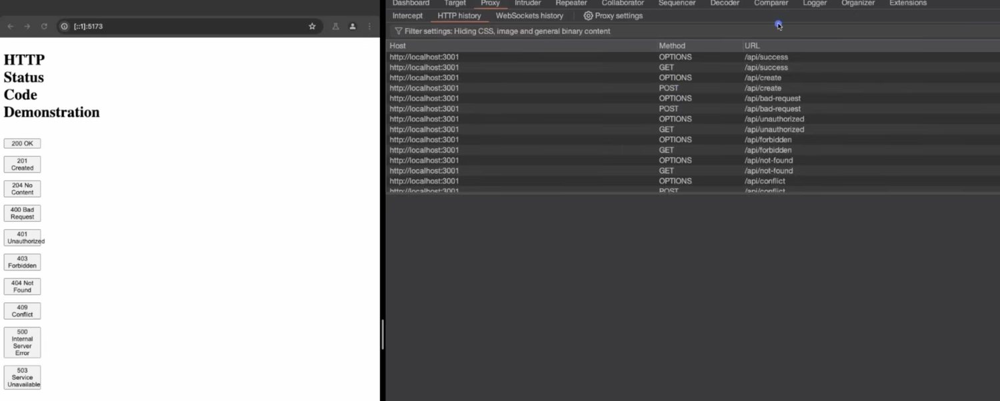
OPTIONS / real-method pattern — a preflight before each one, because the page is on port 5173 and the API on 3001.GET /api/success HTTP/1.1 Host: localhost:3001 Origin: http://[::1]:5173 HTTP/1.1 200 OK X-Powered-By: Express Access-Control-Allow-Origin: * Content-Type: application/json; charset=utf-8 Content-Length: 53 ETag: W/"35-uoWDsGTnfBYk8d18mOzZ34MnL2M"{ "message": "Request was successful", "statusCode": 200 }
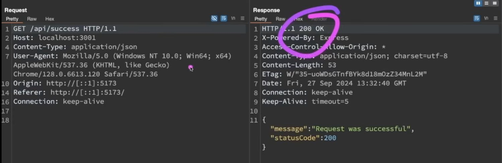
GET /api/success returns a body and a 200. Everything else in this section is a deviation from this.POST /api/create HTTP/1.1 Host: localhost:3001 Content-Type: application/json HTTP/1.1 201 Created{ "message": "Resource created successfully", "statusCode": 201 }
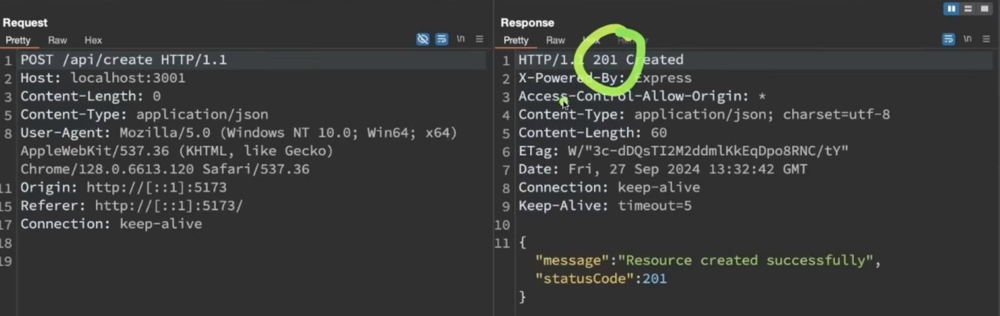
POST, and the code changes to 201 — something now exists that didn't. The body confirms it, but the number is what a client branches on.POST /api/bad-request → HTTP/1.1 400 Bad Request{ "error": "Bad Request: Missing required data", "statusCode": 400 }GET /api/unauthorized → HTTP/1.1 401 Unauthorized{ "error": "Unauthorized access", "statusCode": 401 }GET /api/forbidden → HTTP/1.1 403 Forbidden{ "error": "Forbidden: You do not have access", "statusCode": 403 }
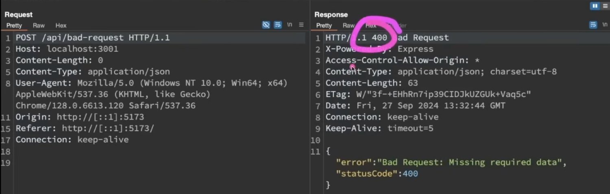
Content-Length: 0 on a POST that required data. The server names the problem: missing required data. The client's job is to fix the input and resubmit.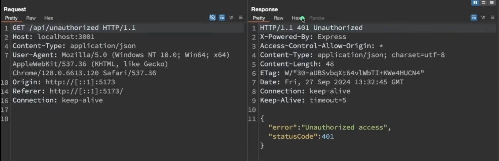
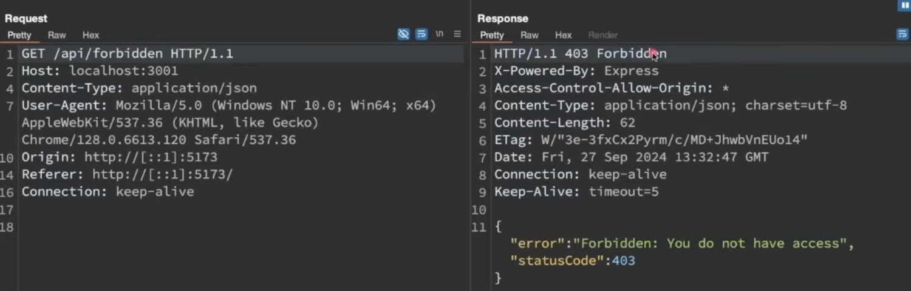
GET /api/not-found → HTTP/1.1 404 Not Found{ "error": "Not Found: The requested resource could not be found", "statusCode": 404 }POST /api/conflict → HTTP/1.1 409 Conflict{ "error": "Conflict: Resource already exists", "statusCode": 409 }
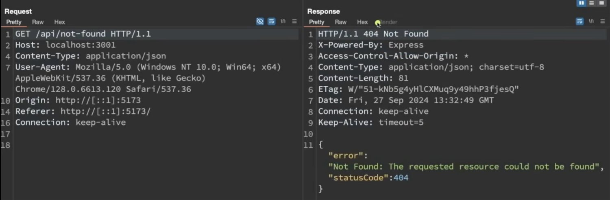
Access-Control-Allow-Origin — without it the browser would hide the 404 behind a generic network error.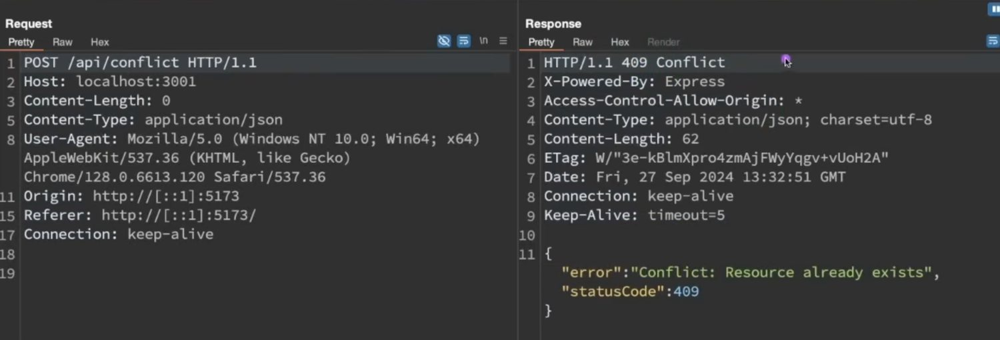
HTTP/1.1 500 Internal Server Error X-Powered-By: Express Content-Type: application/json; charset=utf-8 Content-Length: 50{ "error": "Internal Server Error", "statusCode": 500 }GET /api/service-unavailable → HTTP/1.1 503 Service Unavailable{ "error": "Service Unavailable: Please try again later", "statusCode": 503 }
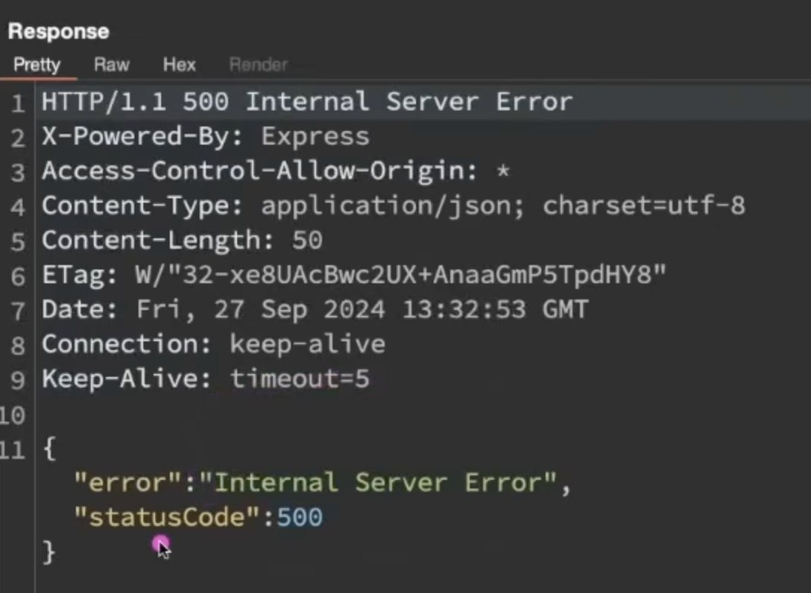
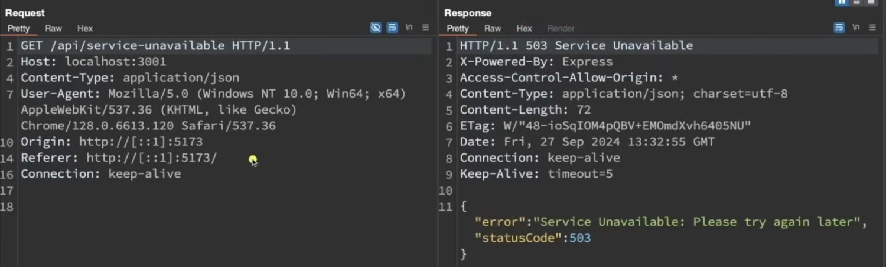
Three things worth noticing across all of them
The error responses still have bodies. A 4xx or 5xx isn't "no answer" — it's an answer whose content is an explanation. Returning a structured error body alongside the code is good practice; the code tells software what happened, the body tells a developer why.
Access-Control-Allow-Origin: * appears on the error responses too. It has to. Without it the browser would block the response and your JavaScript would see a generic network failure instead of a useful 403 — and you'd spend an hour debugging the wrong problem.
X-Powered-By: Express is on every single one. That's the information-disclosure finding from post 03, still present. One line — app.disable('x-powered-by') — removes it.
HTTP caching is a technique to store copies of responses for reuse, reducing the need for repeated requests to the server. This improves load time, reduces bandwidth and decreases server load — because the client does not need to download a lot of data and the server does not need to send a lot of data if the data is not changed.
Two different questions, often confused
Caching splits into two mechanisms that solve different problems.
Freshness — "may I use my copy without asking at all?" Answered by Cache-Control: max-age=10: for the next ten seconds, use your copy and send nothing. Zero network traffic. This is the fast path.
Validation — "my copy has expired; is it still correct?" Answered by a conditional request: the client asks, the server compares fingerprints and either sends fresh content (200) or says "unchanged" (304). Cheap, but still a round trip.
The demo below is about validation, because that's where the interesting headers are.
Analogy
Freshness is a "best before" date: until it passes, don't even look. Validation is ringing the shop to ask "is my 2019 edition still current?" — a ten-second call instead of a trip across town. And the 304 is them saying "yes, nothing's changed" — you drove nowhere and still have the right information.
| Header | Direction | Job |
|---|---|---|
Cache-Control: max-age=10 | response | "Reuse this freely for 10 seconds without asking." |
ETag: 3141 | response | A fingerprint of this exact version of the content. |
Last-Modified | response | When it last changed. A coarser fallback for the same job. |
If-None-Match: 3141 | request | "Only send it if the ETag differs from this." |
If-Modified-Since | request | "Only send it if it changed after this time." |
ETag, and why a hash
An ETag (entity tag) is a short string that changes whenever the content changes. Usually it's a hash — a function that turns any amount of data into a short fixed-length fingerprint, where any change to the input produces a completely different output. The demo uses a plain number (3141) for legibility; real ones look like W/"2f-9KrxtO8260MExpKES4oz59cCE/g".
The W/ prefix means weak: the two versions are semantically equivalent even if not byte-identical. A strong ETag promises byte equality, which matters for resuming partial downloads.
Last-Modified does a similar job with a timestamp, but only has one-second resolution and can't detect a change that reverted. ETags are the more precise tool; servers usually send both.
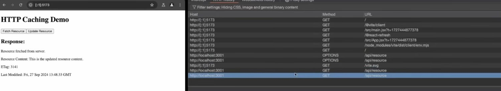
GET /api/resource HTTP/1.1 Host: localhost:3001 # nothing conditional here — the client has no copy yet HTTP/1.1 200 OKCache-Control: max-age=10, publicETag: 3141Last-Modified: Fri, 27 Sep 2024 13:48:33 GMT Content-Length: 112 { "content": "This is the updated resource content.", "lastModified": "Fri, 27 Sep 2024 13:48:33 GMT", "etag": "3141" }
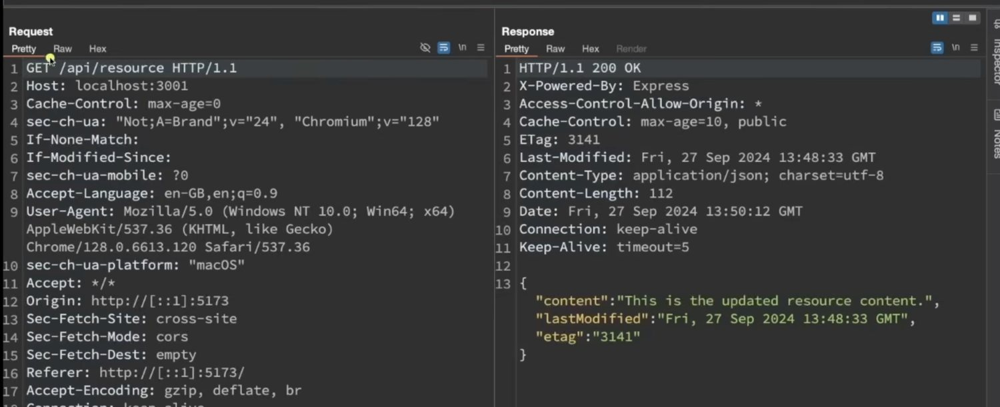
Cache-Control: max-age=10, public, ETag: 3141 and Last-Modified. The client stores all three alongside the body.What the client now stores
Three things: the body, the ETag 3141, and the last-modified time. max-age=10, public means it may reuse this for ten seconds without asking anyone, and public means shared caches — a CDN, a proxy — may also keep a copy. (private would mean browser-only; use it for anything user-specific.)
GET /api/resource HTTP/1.1 Host: localhost:3001 Cache-Control: max-age=0If-None-Match: 3141If-Modified-Since: Fri, 27 Sep 2024 13:48:33 GMT HTTP/1.1 304 Not Modified Cache-Control: max-age=10, public # no body at all — that is the entire saving
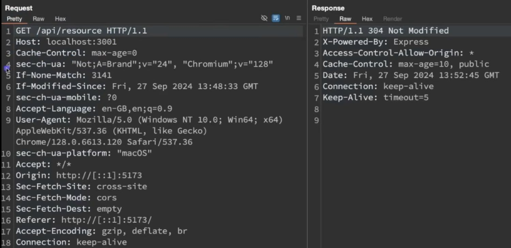
If-None-Match: 3141 and If-Modified-Since. They match, so the response is seven header lines and no body at all.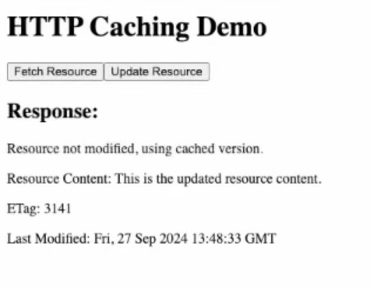
200 for the first fetch, 204 for the preflight, 304 for the second fetch. The whole caching story in three rows.What we are trying to say to the server is: if the ETag of the requested resource is not the same as this one which we have with us in the browser, or if the request has been modified after this — which means we have the outdated version — then send us the updated resource. Otherwise I will just use my cached version.
Reading the conditional request
If-None-Match: 3141 literally means "perform this request only if your ETag does not match 3141." The double negative is awkward but precise: a match means no work needed.
The server compares, finds they match, and returns 304 Not Modified with no body. A few hundred bytes of headers instead of the full payload. The client then serves its stored copy, and the page shows "Resource not modified, using cached version."
Note Cache-Control: max-age=0 on the request. That's the client saying "don't serve me from cache blindly, actually revalidate" — which is what a manual fetch does, and why we see the conditional request at all rather than silence.
POST /api/update-resource HTTP/1.1 HTTP/1.1 200 OK{ "message": "Resource updated", "newEtag": "2943" }# then the client refetches, still carrying the OLD etag: GET /api/resource HTTP/1.1If-None-Match: 3141If-Modified-Since: Fri, 27 Sep 2024 13:48:33 GMT HTTP/1.1 200 OK # ← 200, not 304ETag: 2943Last-Modified: Fri, 27 Sep 2024 13:55:52 GMT { "content": "This is the updated resource content.", "lastModified": "Fri, 27 Sep 2024 13:55:52 GMT", "etag": "2943" }
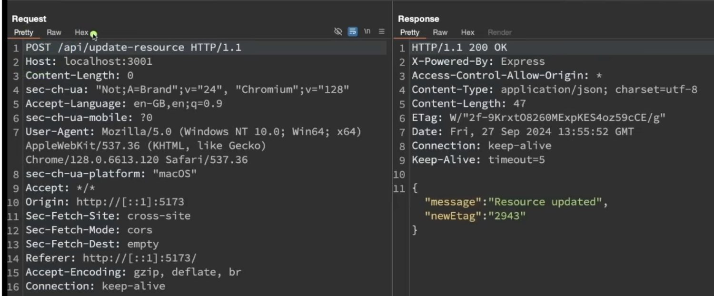
2943. The client hasn't been told to discard anything — it simply still holds 3141.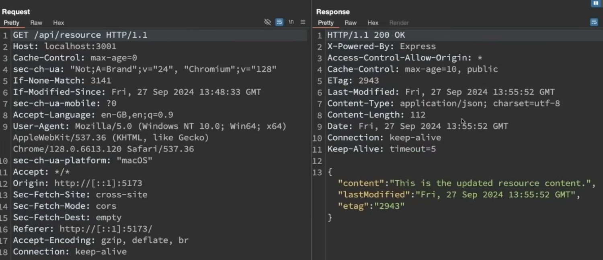
3141. This time the tags differ, so the full body arrives with ETag: 2943 and a new last-modified time.The moment the mechanism proves itself
Same conditional request as step 2, different answer. The client still offers 3141; the server now holds 2943; they don't match, so the condition is satisfied and the full body is sent — along with the new ETag, which the client stores in place of the old one.
This is the whole system working: the client never had to know whether the resource changed. It asked a question that is cheap to answer, and the server decided.
GET /api/resource HTTP/1.1If-None-Match: 2943 # the new one nowIf-Modified-Since: Fri, 27 Sep 2024 13:55:52 GMT HTTP/1.1 304 Not Modified
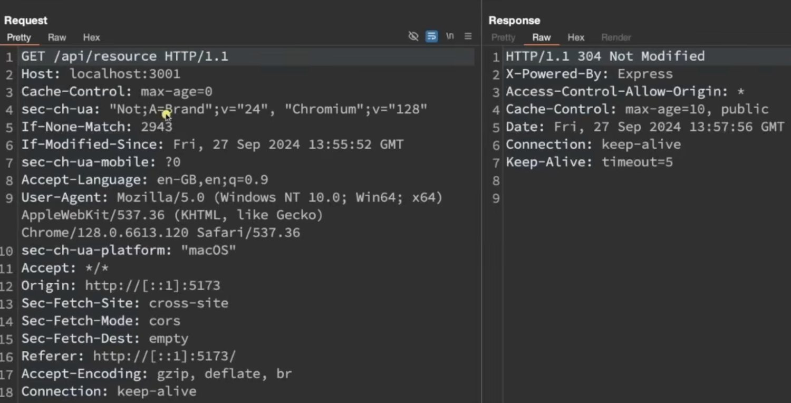
If-None-Match: 2943 — the tag it just received. Match again, body suppressed again. The cycle is stable until the next update.The whole cycleOnly steps 1 and 4 transfer content. Steps 2 and 5 cost a round trip and a few hundred bytes — and on a real page with a hundred assets, that difference is the difference between fast and slow.
Even though in a production setting it gets a lot complicated, because the server has to manually implement and manage all these ETags, and if by mistake you forgot to update an ETag then the client will continue to use the cached version with the outdated resource — which is not a good idea.
The two hard problems with caching
Stale data. A forgotten ETag update means clients confidently serve old content and there is no error anywhere — nothing crashes, nothing logs, the system looks perfectly healthy while showing people yesterday's prices. Cache bugs are quiet, which makes them expensive.
Invalidation. Once you've told the world "cache this for a year," you cannot take it back. The standard answer is cache busting: change the URL itself when the content changes — app.a3f91c.js instead of app.js — so a new version is a new resource and the old cache entry becomes irrelevant rather than wrong.
Nowadays we have better solutions for caching — for example React Query, which is a complete client-side cache, so the client has complete power over when it wants to use a cached resource and when it wants to refetch. In my opinion a much better solution compared to traditional HTTP-based caching. But it is good to know we have this option; if our use case is simple enough we can go ahead and use HTTP-based caching.
Why application-level caching often wins for APIs
HTTP caching is declarative: the server states a policy and every cache in the chain obeys, with the client having little say. That's ideal for static assets — images, scripts, fonts — where the server genuinely does know best and the content is shared by everyone.
It's a poor fit for application data, where the client knows things the server can't: this screen is visible right now, that data is stale because the user just edited it, refetch when the window regains focus. A client-side cache like React Query is imperative — the application decides. Different tools for different problems, and most real systems use both.
This is basically a mechanism using which client and server agree on the best format to exchange data. The client can indicate its preferred format — like JSON or XML or HTML — and the server will try to respond with a compatible format, or if not available, a fallback format.
The idea, and why it isn't just separate URLs
One resource, several representations. The Spanish XML version and the English JSON version are the same underlying thing wearing different clothes. Negotiation keeps them at one URL and lets the client state preferences in headers.
You could instead expose /api/resource.es.xml and /api/resource.en.json and so on — and plenty of APIs do. The trade-off: separate URLs are simpler to reason about and cache, but multiply combinatorially and mean a link you share carries your language preference to whoever you sent it to. Negotiation keeps one canonical link that adapts per reader.
Accept goes out, Content comes backThe naming is consistent and worth memorising: Accept-* headers are the client's wishes; Content-* headers are the server's decision.
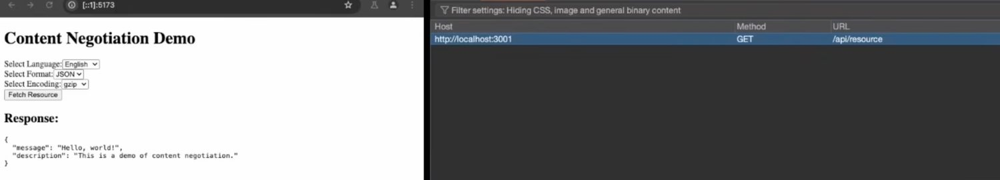
GET /api/resource behind all of them. The URL never changes.# English + JSON Accept: application/json Accept-Language: en → HTTP/1.1 200 OK Content-Type: application/json{ "message": "Hello, world!", "description": "This is a demo of content negotiation." }# change one header: Spanish + JSON Accept: application/json Accept-Language: es → HTTP/1.1 200 OK Content-Type: application/json{ "message": "Hola, mundo!", "description": "Esta es una demostración de negociación de contenido." }# change another: Spanish + XML Accept: application/xml Accept-Language: es → HTTP/1.1 200 OK Content-Type: application/xml<response> <message>Hola, mundo!</message> <description>Esta es una demostración de negociación de contenido.</description> </response>
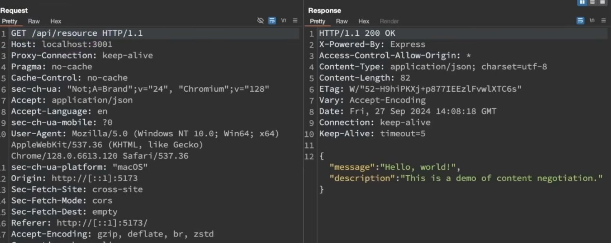
Accept: application/json and Accept-Language: en. Note Vary: Accept-Encoding on the response — the server warning caches that its answer depends on the request.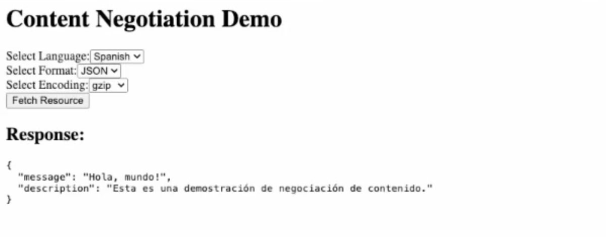
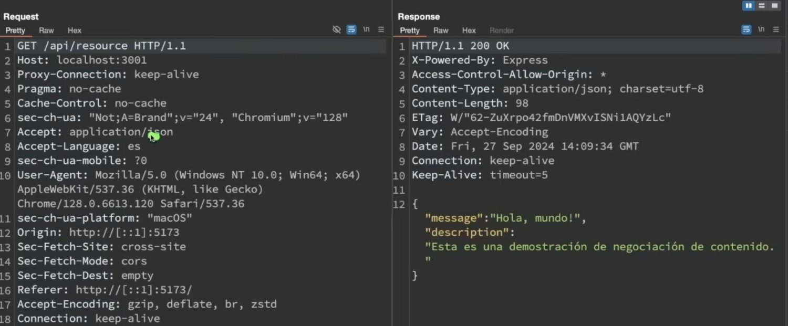
Accept-Language: es is the only difference from the English request.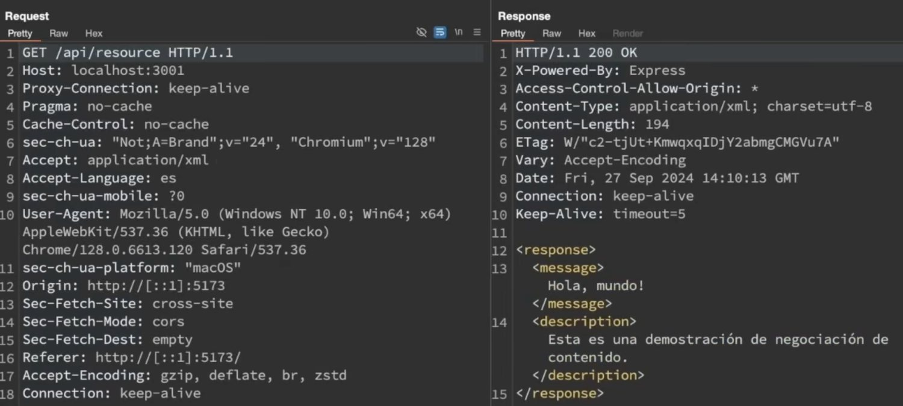
Accept: application/xml as well. Same path, same language, different serialisation — and Content-Type in the response reports what was chosen.Three requests, one URL, no code change on the client
Each capture is GET /api/resource. The path never changes. The only difference between them is one header value, and the server rebuilds its answer accordingly — different language, different serialisation format.
Notice Vary: Accept-Encoding in the responses. That's the server warning caches that its answer depends on a request header. Without it, a shared cache could store the Spanish XML and hand it to the next person who asked for English JSON. Any time you negotiate, you must vary — and forgetting is a classic production bug.
Quality values, since you'll see them
Real browsers don't send a single preference; they send a ranked list with q-values between 0 and 1:
Accept-Language: en-GB,en;q=0.9,es;q=0.5 means: British English ideally; any English is nearly as good; Spanish if you must. The server picks the highest-ranked thing it can actually produce. Omitting q means q=1.
You saw exactly this in post 04's captures — en-GB,en;q=0.9 — sent automatically by the browser on every request, whether or not any server ever reads it.
Security note · negotiation headers are a fingerprinting surface
Accept-Language quietly reveals where you probably are and what you probably speak. Combined with User-Agent, screen size, timezone and installed fonts, it contributes to a browser fingerprint distinctive enough to track someone across sites without any cookie at all. It's a good illustration that privacy leaks rarely come from one damning field — they come from the accumulation of individually reasonable ones.
I've replaced the JSON response with a very large file of 11,000 entries. Because we are compressing the file on the server side with gzip encoding, the size is 3.8 MB. Now let me disable compression on the server side and fire the same request — the file size becomes 26 MB. That's a huge increase, and imagine every client having to download that file.
The measurement from the demoOne server-side setting, nearly seven times the bandwidth. This is the cheapest performance win available and it is a single line of configuration.
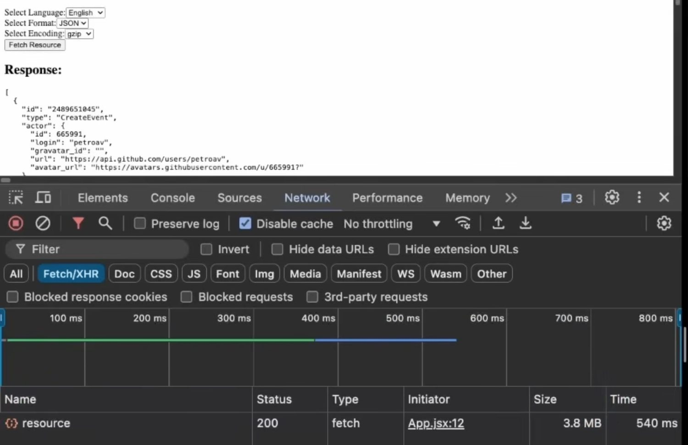
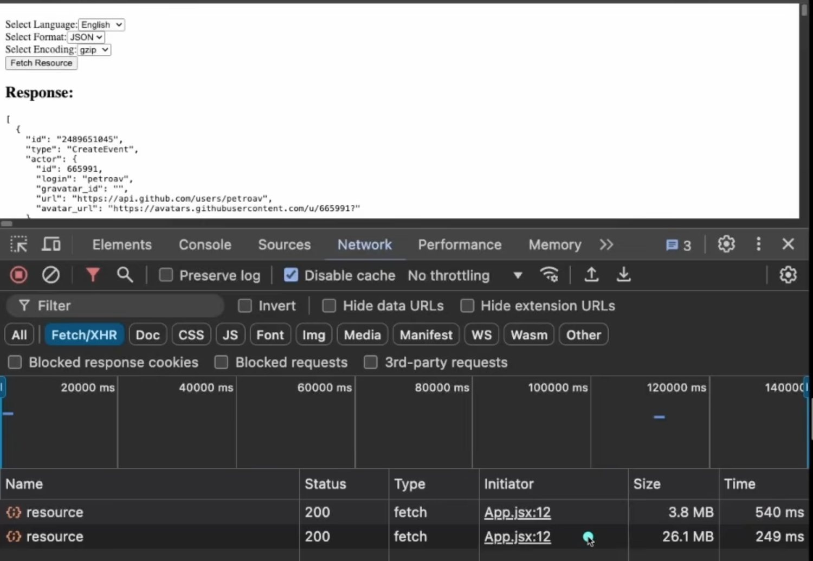
How it actually works, and the one header that switches it on
The client advertises what it can decompress with Accept-Encoding: gzip, deflate, br, zstd. The server picks one, compresses the body, and says which it used with Content-Encoding: gzip. The browser decompresses before your code ever sees it — so from JavaScript's point of view nothing happened at all.
Compression trades CPU for bandwidth. That's almost always a good trade for text; it's a waste for anything already compressed — JPEGs, PNGs, MP4s, ZIPs — where you spend the CPU and get nothing, and can occasionally end up slightly larger.
Analogy
Vacuum-packing clothes for a suitcase. Same clothes, a fraction of the volume, a little effort at each end. Vacuum-packing a brick achieves nothing — which is why you don't gzip a JPEG.
Why the raw response looked like garbage
In the capture, the compressed response body renders as ì½{ ³$Çu'öU*·ÿ¹ { and so on. That isn't corruption — it's the compressed bytes, viewed as if they were text. The proxy is showing you the literal wire content, before the browser has unpacked it. Content-Length: 3802821 counts those compressed bytes, not the original size.
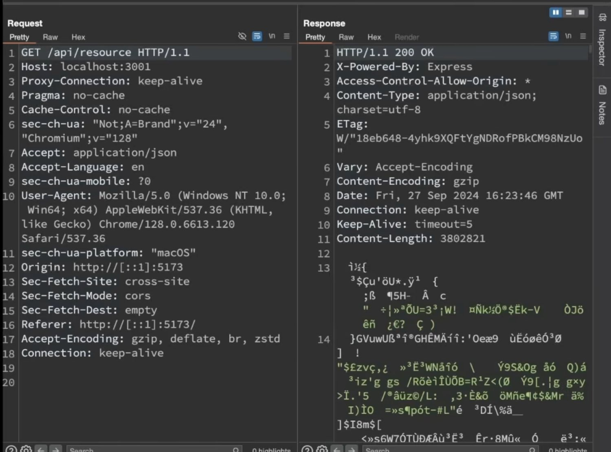
Content-Encoding: gzip at the top is the instruction to unpack it; the browser does so before your code sees anything.Security note · compression plus secrets equals a leak
Compression works by exploiting repetition, so the compressed size depends on the content — which means size becomes an information channel. If an attacker can inject text into a response that also contains a secret, they can guess the secret one character at a time by watching which guesses make the output smaller (because their guess matched, and matches compress). This is the basis of the BREACH and CRIME attacks.
The practical takeaway: don't put secrets like CSRF tokens in compressed responses that also reflect user input. It's an unusually elegant reminder that side channels don't care about your encryption.
In the early days of HTTP, specifically HTTP/1.0, each request-response cycle required a separate connection to the server. This created inefficiencies since establishing and closing TCP connections is resource intensive and slow. To address this, persistent connections were introduced in HTTP/1.1.
This is post 04's handshake diagram, cashed out
Recall the round trips before a single useful byte moves: SYN, SYN-ACK, ACK for TCP, then the TLS exchange on top. On a connection with 100ms of latency that's several hundred milliseconds of pure ceremony.
A persistent connection pays that once and then reuses the line. On a page making eighty requests, that's the difference between eighty handshakes and one. It is the single largest reason HTTP/1.1 outperformed HTTP/1.0.
| Setting | Meaning | Where it applies |
|---|---|---|
Connection: keep-alive | "Don't hang up, I'll ask again shortly" | Default in HTTP/1.1; explicit in 1.0 |
Connection: close | "Close after this response" | Default in HTTP/1.0; can be forced in 1.1 |
Keep-Alive: timeout=5 | Hold the line 5 seconds after the last request | Optional tuning |
Keep-Alive: max=100 | Allow at most 100 requests on this connection | Optional tuning |
In HTTP/1.1 connections are persistent by default. We won't have to do anything explicitly about them — they remain open for further requests unless explicitly closed. That is some amount of information you just have to understand, but you usually won't be working with them; the default values work fine.
Why timeout=5 is a real trade-off
Every held-open connection consumes memory and a file handle on the server whether or not it's being used. Hold them too long and an idle crowd exhausts your connection limit; close them too fast and returning visitors pay the handshake again.
Five seconds is the common default because it comfortably covers "the browser is still loading this page" without keeping thousands of idle sockets alive. You'll see Keep-Alive: timeout=5 in almost every capture in these notes — it's Express's default, not a considered choice by anybody.
Note also that Connection is meaningless in HTTP/2 and later, where a single multiplexed connection is simply how the protocol works. If you see the header there, it's a leftover.
One last topic I want to cover is handling large requests and responses — how a server takes in large requests like video files, image files, audio files, and how a client can receive large responses in the same way.
Two directions, two mechanisms. Uploading uses multipart; downloading uses streaming.
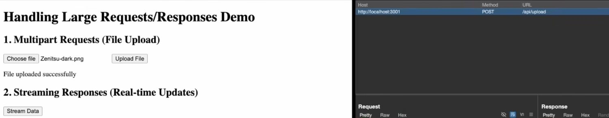
Multipart is usually used for sending large files or any kind of files to the server from the client. The difference from our typical JSON request body is that in a multipart request the binary data of the file is transferred to the server in parts — that's why it is called a multipart request.
The problem multipart solves
JSON is text. A PNG is raw bytes, most of which aren't valid text at all. You can smuggle binary into JSON by base64-encoding it, but that inflates the data by a third and forces the whole thing into memory on both ends.
Multipart instead splits the body into labelled sections, each with its own headers, separated by a marker string. Binary goes across untouched, several fields and files can travel in one request, and the server can stream each part to disk as it arrives rather than buffering the lot.
POST /api/upload HTTP/1.1 Host: localhost:3001 Content-Length: 912097 Content-Type: multipart/form-data; boundary=----WebKitFormBoundarycn7JAzmAvSCc5fPB # part one begins — the boundary marks it ------WebKitFormBoundarycn7JAzmAvSCc5fPB Content-Disposition: form-data; name="file"; filename="Zenitsu-dark.png" Content-Type: image/png …911,908 bytes of raw PNG… ------WebKitFormBoundarycn7JAzmAvSCc5fPB-- # the trailing -- means: that was the last part HTTP/1.1 200 OK{ "message": "File uploaded successfully", "fileDetails": { "fieldname": "file", "originalname": "Zenitsu-dark.png", "mimetype": "image/png", "destination": "uploads/", "filename": "33b1d301655cb848016f3726fdde6c4f", "size": 911908 } }
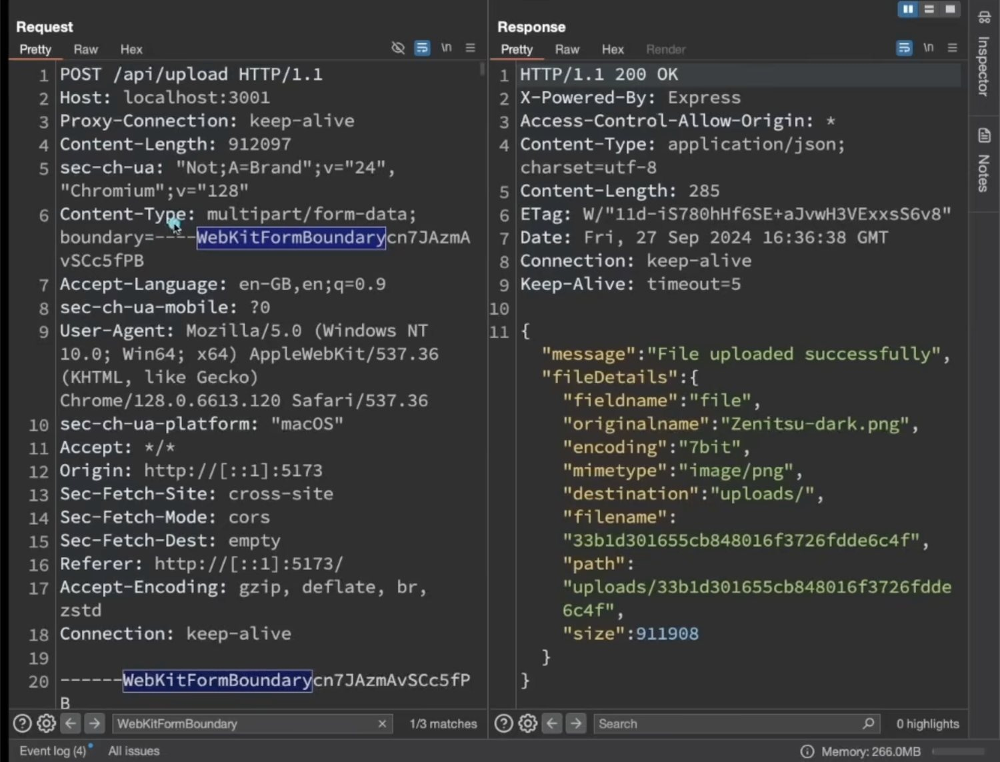
Content-Type: multipart/form-data; boundary=----WebKitFormBoundary…, and the same string appearing again at the start of the part. The response shows the server stored the file under a generated name, keeping the original only as metadata.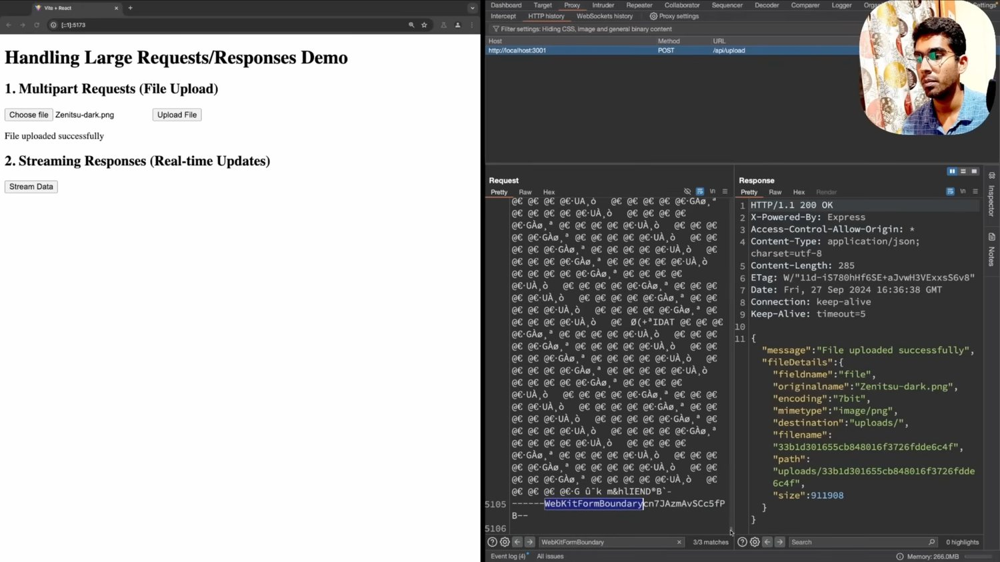
--. That suffix is the only thing marking the end of the upload.The boundary, which is the whole trick
The body has no Content-Length per part, so the receiver needs some way to know where one part ends. That's the boundary: a random string declared up front in the Content-Type header, then repeated before each part and once more with a trailing -- at the end.
It has to be random precisely because it must not occur inside the file's own bytes — if it did, the server would split the image in half and you'd get a corrupt upload. WebKitFormBoundary plus random characters is just Chrome's convention; the string itself is arbitrary.
Notice too what the server did with the filename: it stored the file as 33b1d301655cb848016f3726fdde6c4f and kept Zenitsu-dark.png only as metadata. That's deliberate — see the note below.
Analogy
Posting several documents in one envelope with coloured card between them. The card is the boundary. You pick a colour you're certain doesn't appear in any of the documents, and you tell the recipient up front which colour to look for. The last card has a corner torn off to mean "that's everything."
Security note · file upload is one of the riskiest features you can build
Every one of these matters, and the capture above quietly gets the first one right:
Never trust the filename. originalname is attacker-controlled text. A filename of ../../etc/cron.d/evil is a path traversal attack; shell.php on a PHP host is remote code execution. Generate your own name, as this server did, and keep the original only as a display label.
Never trust mimetype. It's whatever the client claimed. Check the actual file signature, and recall X-Content-Type-Options: nosniff from post 04 — a file that claims to be a PNG but contains JavaScript is a live threat if any browser ever guesses.
Serve uploads from somewhere they cannot execute, ideally a different origin entirely, so that even a successful malicious upload can't run as your site.
Limit the size. Without a cap, one request can fill your disk. Content-Length: 912097 should be checked before a byte is written, not after.
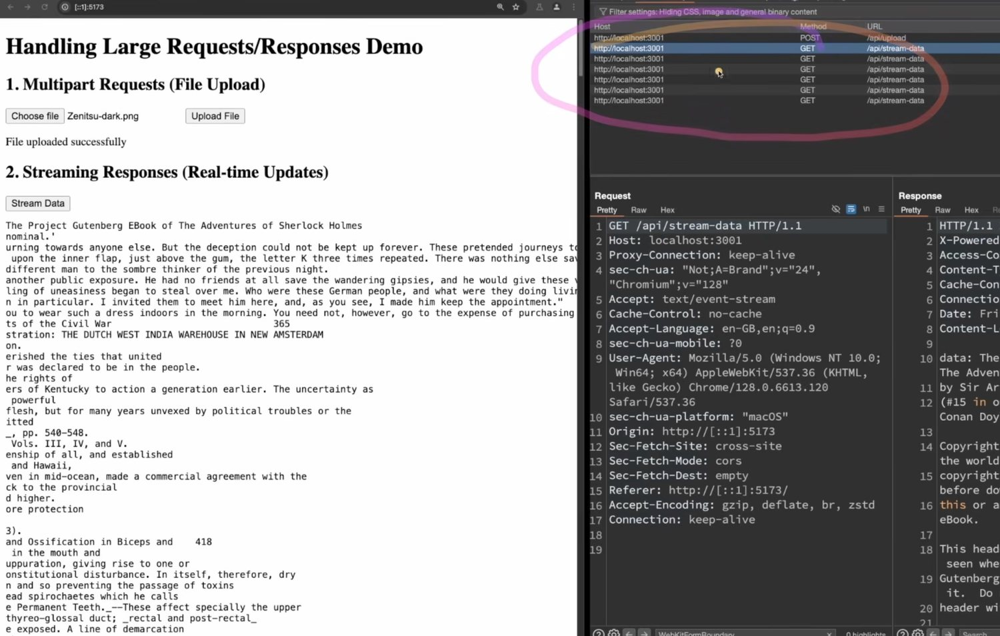
For this demo I have used a large text file on the server side and we want to stream the data to the client side in chunks. You can see that we are receiving chunks continuously from the server. The client keeps appending all the data that it is receiving and constructing this whole text file.
GET /api/stream-data HTTP/1.1 Host: localhost:3001 Accept: text/event-stream Cache-Control: no-cache HTTP/1.1 200 OKContent-Type: text/event-streamCache-Control: no-cacheConnection: keep-alive data: The Project Gutenberg EBook of The Adventures of Sherlock Holmes data: by Sir Arthur Conan Doyle data: (#15 in our series by Sir Arthur Conan Doyle) …the connection stays open, more data arriving…
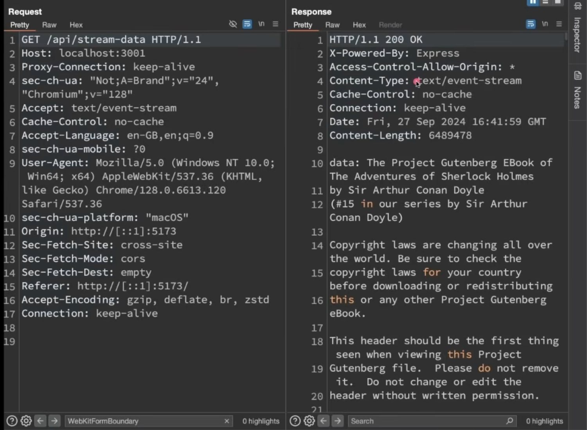
Content-Type: text/event-stream, Cache-Control: no-cache, Connection: keep-alive — the three headers that turn a response into a channel. Each line prefixed data: is one event.The three headers that make it a stream
Content-Type: text/event-streamtext/plain. This declares Server-Sent Events — the one-way push channel mentioned in post 04 as a workaround for the server not being able to speak first. Each line prefixed data: is one event the client receives as it arrives.Cache-Control: no-cacheConnection: keep-aliveWhy streaming is worth the complexityThe total bytes are identical. What changes is when the first one arrives — and how much memory the server needs while it happens.
Chunked transfer vs Server-Sent Events, since they're related but not the same
Chunked transfer encoding (from post 04) is the HTTP/1.1 mechanism for sending a body whose length isn't known in advance: each chunk is prefixed with its size, and a zero-length chunk ends it. It's a transport detail and applies to any content type.
Server-Sent Events is a format layered on top: Content-Type: text/event-stream, messages prefixed data:, and a browser API (EventSource) that reconnects automatically if the line drops. Use chunked when you're sending one large thing progressively; use SSE when you're sending a series of discrete updates over time.
And use WebSockets when you need the client to talk back on the same channel — SSE is strictly one-way.
SSL was the original protocol for securing communications between a client like a web browser and a server. It encrypts data so that sensitive information like passwords or credit card numbers cannot be intercepted by attackers. Currently SSL is outdated due to some security vulnerabilities and has been replaced by TLS.
Three names, one ideaHTTPS is not a separate protocol. It is exactly the HTTP from post 04, placed inside a TLS tunnel, on port 443 instead of 80.
The third property is the one people forget
Encryption is the obvious benefit, but authenticity matters just as much. Encrypting a conversation with an impostor achieves nothing — which is exactly the DNS-hijacking scenario from post 03. The certificate is what makes the encryption meaningful, by binding it to a verified identity.
And note what the padlock does not mean. It says: this connection is encrypted, and this site really is the domain in the address bar. It says nothing whatsoever about whether that domain is trustworthy. A phishing site with a free certificate shows the same padlock as your bank.
Where each piece appeared in this series
Strict-Transport-Security forces the browser never to fall back to plain HTTP.Practically, all you do
Get a certificate (Certbot, free, automatic). Terminate TLS at the proxy. Redirect port 80 to 443. Send HSTS. Let the library choose the cipher suites — hand-picking them is how people accidentally re-enable something broken. That's the whole job, and it's the same five steps whether you're serving ten people or ten million.
The whole post in one paragraph
A status code is a three-digit verdict that lets software decide what to do before reading the body — and since caches, proxies, retry libraries and monitoring tools all act on it, lying about it corrupts far more than your own client. The first digit is the category: 1xx provisional, 2xx success, 3xx redirect, 4xx you erred, 5xx I erred. Within those, the distinctions that matter are 201 vs 204 (something was created vs there's deliberately nothing to send), 301 vs 302 (cached forever vs reversible), 401 vs 403 (we don't know you vs we know you and no), and 502 vs 504 (your upstream is dead vs your upstream is stuck). 304 is the hinge into caching: paired with an ETag and a conditional If-None-Match request, it lets a server confirm your saved copy is still valid for a few hundred bytes instead of a few megabytes. Content negotiation lets one URL serve many representations — Accept-* going out, Content-* coming back, and Vary warning caches that the answer depends on the question. Compression took the same 26 MB response down to 3.8 MB for one line of config. Persistent connections pay the TCP and TLS handshake once instead of per request. Large uploads move as multipart bodies split by a random boundary; large downloads move as streams so the first byte arrives immediately and neither side buffers the whole thing. And HTTPS is simply all of the above, unchanged, inside a TLS tunnel.
Location header.Retry-After and wait.max-age.max-age=10, no-store, public, private, no-cache.W/ marks a weak one.If-None-Match, If-Modified-Since.app.a3f91c.js) so old entries become irrelevant rather than wrong.en;q=0.9 means "English is nearly as good."timeout and max tune it.Content-Type.text/event-stream, lines prefixed data:.../ in a supplied filename to write outside the intended directory.If you remember three things
One — the status code is not decoration for your client; it is the signal every cache, proxy and retry mechanism in the path acts on, so returning 200 with an error body breaks things you can't see. Two — caching's hard problem is never storage, it's knowing when your copy went wrong, and stale caches fail silently while looking perfectly healthy. Three — compression, keep-alive and streaming are each one line of configuration and each worth more than almost any code you will write that week.